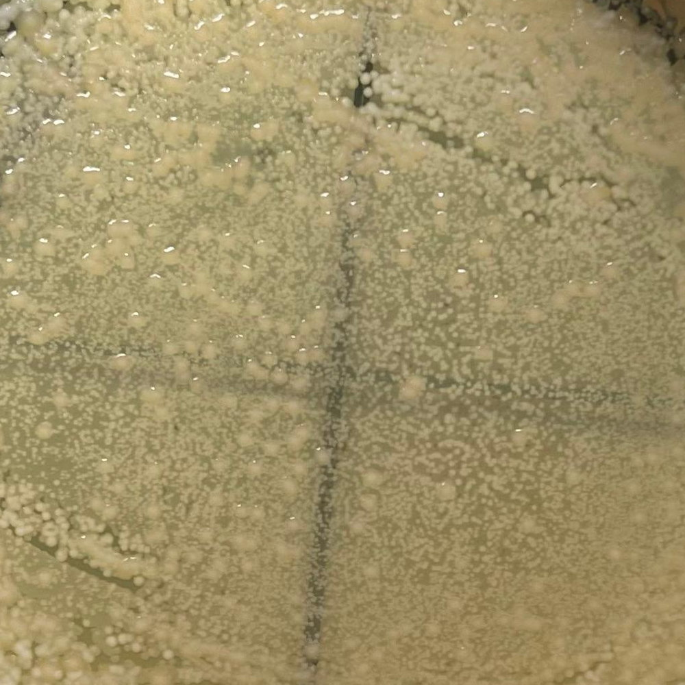
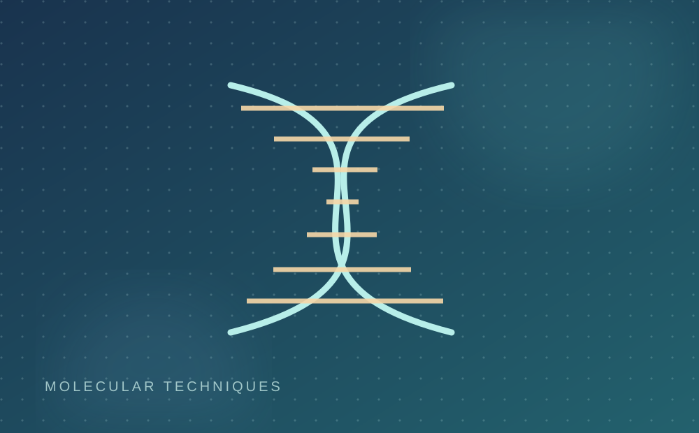

01 / MICROBIOLOGYNUMS internship · 2025
Culture handling and FCP evaluation
Prepared inocula, performed subculturing, recorded optical-density-based growth observations, and conducted direct and pre-exposure disc-diffusion assays. Comparative observations were evaluated across culture and treatment conditions.
Aseptic techniqueoptical-densityDisc diffusionGrowth assessment
Project case study ↗ 02 / FORMULATION
02 / FORMULATIONNUMS internship · 2024
Emulsion formulation and stability assessment
Contributed to physical preparation, ultrasound-assisted processing and comparative stability observations of experimental water-in-oil formulations. Composition and parameter details remain private.
Ultrasonic sonicationFormulationStability screeningLaboratory observation
Project case study ↗
03 / MOLECULAR BIOLOGYNIGAB / NARC · Apr–May 2026
Molecular and field research training
Practised CTAB-based genomic DNA extraction from peanut samples and participated in field-based rice-planting activities during research training at NIGAB–NARC. This entry represents training rather than a standalone original research publication.
CTAB DNA extractionSample handlingField research